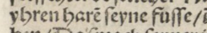
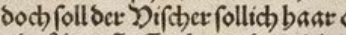
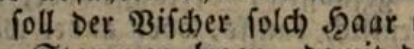

📢 Ground truth level overview
The creation of ground truth (GT) involves several facets. Among other things, GT is subject to a specific purpose or use. The origin of the word ground truth is the German Grundwahrheit. In this sense, it generally means that everything on the printed page is reproduced in the same way. However, individual elements and regions may be reproduced in a simplified or complex and detailed manner. The extent to which this is done depends, among other things, on the purpose, use, scope, affordability, technical availability, and ... This means that in many cases an interpretation is made of individual typographic and graphemic phenomena. In order to make the interpretations made comprehensible, the GT can be transcribed according to corresponding levels of reproduction of the original or, in the case of existing GT, classified or evaluated. A description or explanation of the levels can be found in various places in these guidelines. The following overview lists these level descriptions.
General explanation of the ground truth levels
Transcription in the corresponding level?
Structure-Ground-Truth in the corresponding level?
Explanations of certain cases such as ligatures, punctuation marks, differences between I/J...
This part of the documentation should be particularly noted:
Übersichten und Beispiele (betrifft die Transkription von Zeichen)
Level recommendation
- OCR-D recommends Level 2 for ground truth creation/transcription.
What are the levels not?
- In addition to transcription, the classification of the levels also serves to evaluate ground truth.
- The levels are not a seal of quality.
- When using levels 2 and 3, text-critical automatic recording/transcription is better possible. The precondition is that the respective model has been trained with this ground truth.
- There is only limited compatibility between the texts in levels 1, 2 and 3. In most cases, there is only compatibility in the descending direction (3->2->1).
- The levels can only be used to a limited extent to convert automatically between individual levels.
Problems:
Some problem cases are listed below. Due to the heterogeneity of the phenomena, completeness is not possible.
The problem of long S
siehe: https://de.wikipedia.org/wiki/Langes_s
Zitat aus Wikipedia:
- Wachſtube (Wach·stu·be [Room of a security guard]) and Wachstube (Wachs·tu·be [Tube (see https://www.dwds.de/wb/Tube#d-1-1) filled with wax])
- Kreiſchen (Krei·schen, Screeching) and Kreischen (Kreis·chen, a small circle)
- Verſendung (Ver·sen·dung [Dispatch: something is sent to another place] ) and Versendung (Vers·en·dung [the end of a verse])
- Röschenhof (Rös·chen·hof, a courtyard with small roses) and Röſchenhof (Rö·schen·hof, from given name Röschen)
- Lachſturm (Lach·sturm [hearty laughter]) und Lachsturm (Lachs·turm [a tower made of the fish salmon])
Problem of macron above the sign

Transkription:
vnderlaſſen/ vñ fuͤrnemlich = Level 2
General rule: Level 3: ñ, Level 2 ñ, Level 1 nn (Always consider the context!!)
The normalised paragraph reads:
underlassen/
and
fürnemlich = Level 1
unterlassen/
and
vornemlich = possible level 1 (A very strong normalisation
has been made.)
Problem of normalisation of transcriptions/text

ihren Haaren seine Füße,= Possible level 1yhren harẽ ſeyne fuſſe/= Level 2

doch soll der Vischer solch(es) Haar= Possible level 1doch soll der Vischer sollich haar= Level 1doch ſoll der Viſcher ſollich haar= Level 2
Quelle: [Württemberg, Fürstentum]: Des Fürstenthumbs Wirtemberg newe Landtsordnung/ gebessert vnd gemehret/ sampt darzu gedruckten der armen Casten/ auch Holtz vnnd Vorst ordnungen. [Tübingen], 1552. In: Deutsches Textarchiv https://www.deutschestextarchiv.de/wuerttemberg_landtsordnung_1552, retrieved on 05.08.2021.
Addition:
When using editions, normalisation must also be taken into account. This example clearly shows this.

Quelle: Sammlung der württembergischen Regierungs-Gesetze / 3: Enthaltend den dritten Theil der Samml. der Regierungs-Gesetze : … Regierungs-Gesetze vom Jahre 1727 bis zum Jahre 1805 ( Th. 1, 1489 - 1634, Band 12) [http://opacplus.bsb-muenchen.de/title/BV006590720/ft/bsb10552294?page=702] retrieved on 05.08.2021.